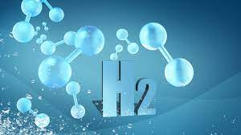

Hidrojen, "H" sembolü ile ifade edilen, atom numarası 1 olan kimyasal elementtir.
Standart atom ağırlığı 1.008 olan hidrojen, periyodik tablodaki en hafif elementtir.
tüm baryonik kütlenin yaklaşık %75'ini oluşturan, evrende en bol miktarda bulunan elementtir.
Hidrojen atomu içerisinde protondan meydana gelmiş bir çekirdek ve bir birim elektrondan oluşan elektron bulutu bulunmaktadır.
geri dön
